Passive Equalization of DUT Loadboards for High-Speed Digital Applications
Jose Moreira, Verigy
Heidi Barnes, Verigy
Mike Howieson, Thin-Film Technologies
Mark Broman, Thin-Film Technologies
Paper ID: 105743
Introduction
Current state-of-the-art integrated circuits (ICs) that are in volume production already contain tens of I/O cells running at speeds between 5Gb/s and 10Gb/s [1]. With the increased availability and quality of these high-speed I/O cells in standard CMOS processes, this trend will continue with near-future devices containing hundreds of these I/O cells. Device pin counts will then be above one thousand, when taking into account all the pins (high-speed, power, low-speed, etc...).
The challenge for the automated test equipment (ATE) industry is to be able to provide the tools for testing and characterizing these I/O cells at-speeds. This means that the ATE platform must be able to measure a large number of high-speed pins. This is one of the toughest challenges facing the ATE industry [2]-[3].
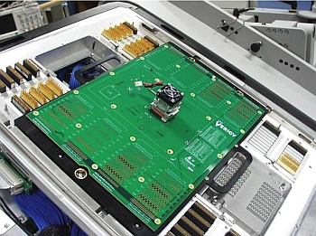
Verigy (Agilent Technologies) had already developed some years ago an option for the V93000 (option XP13G-8) that allow it to test at-speed ICs at 10Gb/s with limited pin count [4]. The challenge is to test multi-gigabit high pin count ICs and remain cost effective. In the past, most of the devices in this speed area were intended for wired communication applications for example, SONET). In the near future they will be intended for consumer markets such as desktop computers, where cost-of-test is a key factor.
In an ATE system, the DUT is connected to the ATE pin electronics through a printed circuit board (PCB) that is known as the test fixture, device interface board, or DUT loadboard. This test fixture contains a series of signal traces (microstrip or stripline) that connect the ATE pin electronics to the socket where the DUT will interface with the test fixture. Figure 1 shows a test fixture docked to an Verigy V93000 ATE system.
The test fixture in Figure 1 is for a graphics device with several I/O cells running at speeds above 5Gb/s. For devices with hundreds of I/O cells, it might be necessary to use all the resources of the ATE system. This will result in test fixture signal traces with lengths of 50 cm for some of the signal traces in the V93000 ATE system. Figure 2 shows a representation of this challenge by demonstrating the degradation of a 6.4 Gb/s waveform when travelling though 19 cm of a test fixture trace using state-of-the-art techniques and materials (19mil width on ROGERS4350).
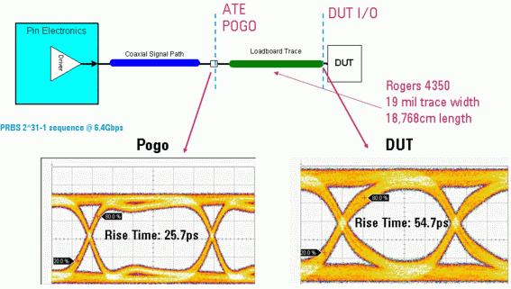
The above figure clearly shows the need to develop techniques to address this issue that go beyond the trace geometry or type of dielectric material used on the test fixture. The reason is that even using of state-of-the-art PCB materials and manufacturing techniques, we are unable to solve the issue of the signal traces loss for long trace lengths at high data rates.
Another way to look at this challenge is in the frequency domain. Figure 3 shows the power spectrum of a 5Gb/s PCI-Express compliance data pattern before and after a lossy signal trace. It is easy to see how the signal trace changes the power spectrum of the data signal by attenuating the higher frequencies more. It is easy to imagine that these changes on the frequency power spectrum will be seen as jitter when looking to the time domain performance of the data signal through an inverse FFT.
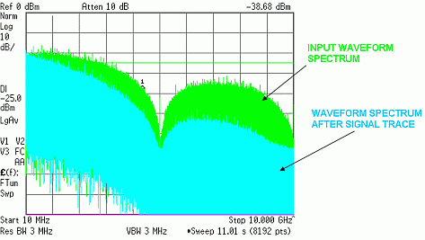
In the next section, we will outline the loss components of a PCB signal trace followed by an introduction to passive equalization. We will then present a process for choosing the correct equalizer for a given application. Finally, we will present some experimental results with a real application followed by some conclusions. In an appendix, we will present a quick discussion of software equalization and how it is related to passive equalization.
Microstrip and Stripline Loss
The loss of a PCB signal trace can be roughly divided into three areas [5]-[6]: conductor loss, dielectric loss and radiation loss. The conductor loss can be also sub-divided into more terms as shown in Figure 4.
For the applications discussed in this article, we will concentrate on the skin effect and dielectric loss contributions. They are the major contributors of the high-frequency loss of signals traversing long signal traces.
Two types of geometries are typically used on test fixtures for high-speed signals. They are stripline and microstrip. If careful attention is paid to the microstrip plating process [7], the loss of a microstrip and a stripline is very similar as shown in Figure 5. At high-frequencies the microstrip does have additional issues due to its quasi-TEM propagation mode, but for the purposes of this article the use of a microstrip or stripline is considered the same.
Several references provide approximate analytical solutions for the losses in a microstrip or stripline trace [8]-[9], but current simulation tools are able to compute the loss profile accurately if appropriate care is taken [10].
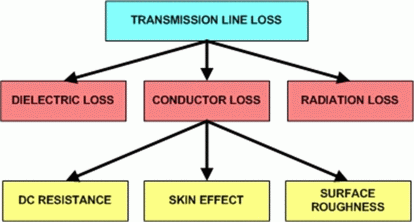
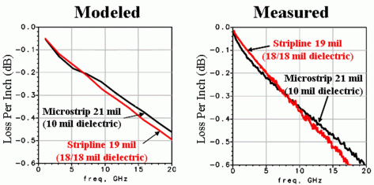
Figure 6 shows a simulation set-up using the Agilent Advanced Design Simulation software package for two different stripline lengths in a ROGERS4350 type dielectric. The striplines have a width of 5.5mil.
The set-up contains a model of the test fixture dielectric (ROGERS4350) and of the stripline. The modeled stripline lengths are 10 inch (25.4 cm) and 20 inch (50.8 cm). Figure 7 presents a comparison of the simulated insertion loss for both stripline lengths.
In Figure 7, it is obvious that the trace length influences the signal path bandwidth significantly. In this specific case, the doubling of the trace length reduced the bandwidth by more than half. Note, that although we did not account for the effects of the socket, pogo connections, etc., the use of a simulation tool with simple, but appropriate models, allows the test engineer to understand the effect of the test fixture design trade-offs on the test application.
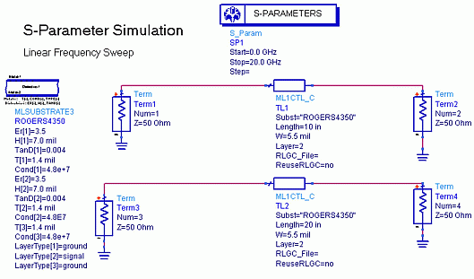
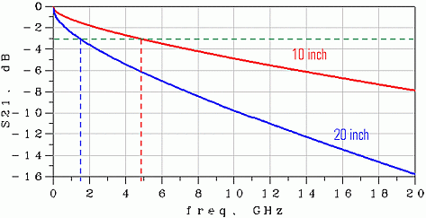
Similar results can be obtained for the dielectric loss [13]. Figure 5 shows a comparison of the insertion loss for two identical trace geometries in different dielectric materials.
Although only the effect of the trace length and dielectric material is presented, the reader must be aware that test fixture design decisions are not limited to only the trace length or dielectric material. Other parameters are also very important for the test fixture performance. For example, the trace width is an important factor since losses due to skin effect are inversely proportional to the trace width. Also, the appropriate design of signal vias including the ground vias to provide a reference plane for the signal via will influence the signal performance [14].
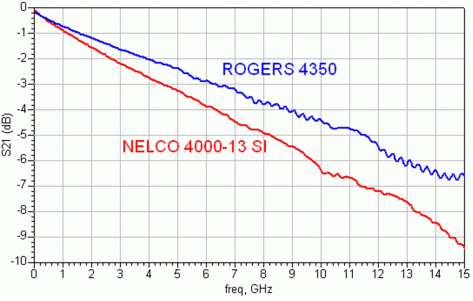
To understand how the frequency -dependent insertion loss of a PCB signal path generates one needs to look to a digital signal in the frequency domain. The critical spectral power density of the digital stimulus resides at and below the fundamental frequency which in NRZ schemes is one half of the data rate in Hertz.
Since most digital signals have high edge rates they resemble square wave spectrums with odd harmonics of the fundamental frequency. Since the trace loss typically increases exponentially with frequency, most of these harmonics are lost to the trace loss beyond equalization. The spectral power density is also limited by the pattern randomness and balancing encoding at the lower frequencies. In Figure 9 a data pattern consisting of two alternating symbols is sent through a lossy signal path. The spectrum of this pattern shows two distinctive peaks representing each symbol. Due to the frequency dependent loss of the signal path, each symbol is attenuated in a different way which results on the time domain in two separate lines in the data eye diagram showing the inter-symbol interference (ISI) jitter generated between these two symbols when going through a lossy signal path.
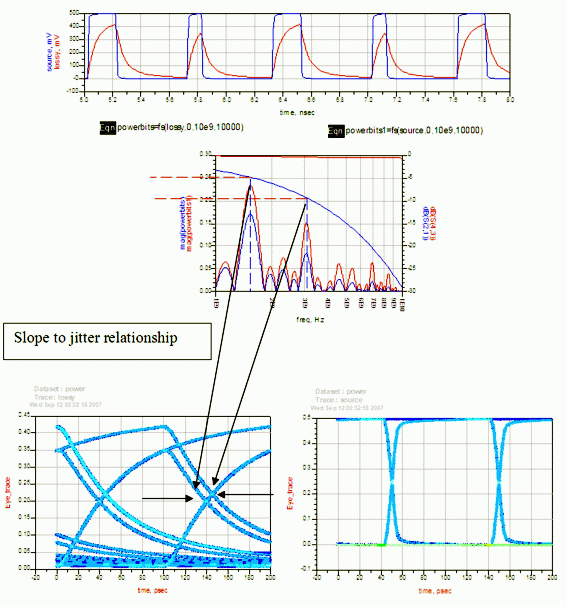
Passive Equalization
Given the frequency dependent behaviour of the loss of a PCB signal trace, a straightforward approach is to compensate this loss with a matching filter. This technique is called equalization and when the filter is made of only passive components it is then called passive equalization. One possible compensation technique for addressing this challenge is the use of a compensation filter that flattens the frequency response by attenuating the lower frequencies. The graph in Figure 10 shows the basics of this technique in the frequency domain.
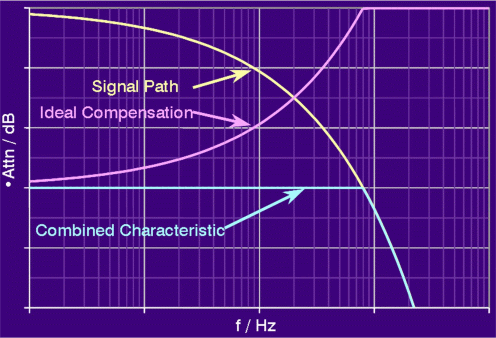
This type of equalization filter approach is not new, but the use of this technique to compensate signal in the 10Gb/s range on a DUT board is new and presents different challenges given the high data rates that the equalizer must address. The basics of passive equalization was patented already by Bode in 1936 [11] and passive equalization has been in use for ATE application for some years already although mainly to compensate for the loss on long coaxial cables [12]. Figure 11 presents some pictures of the original patent application from Bode and Figure 12 presents two examples of possible very simple passive equalizer circuits.
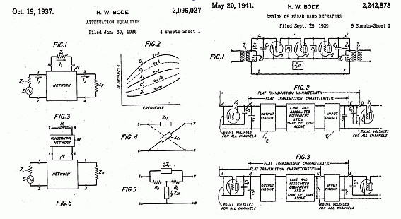
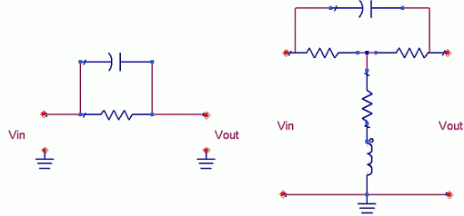
One important consideration of a passive equalizer is that it will also add a DC attenuation to the signal path. However, in a test and measurement application this is easily calibrated out. One needs to keep in mind that the test requirements for a given I/O cell will define a maximum allowed DC loss for the equalizer that still fullfils the test requirements for example, the maximum level swing needed for a given test).
In general, the amount of DC attenuation induced by the passive equalizer is exchanged for the achievable bandwidth of the overall signal path.
Figure 13 presents a graphic description of the trade-offs of passive equalization in regards to the two variables that compose the problem. These variables are the loss of the signal path to be equalized and the amount of loss on the equalizer allowed by the application.
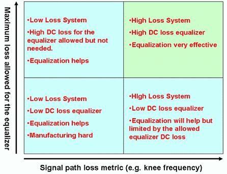
In the past, Verigy (Agilent Technologies) developed several generations of equalizers in coaxial packages for compensating for the loss in the long coaxial cables used in the integration of external equipment with the Verigy V93000. Figure 14 shows some of those equalizers.
But for integration on a DUT board it is necessary to use a small footprint equalizer. For the data-rates under discussion [5-10Gb/s], the passive equalizer manufacturer Thin Film Technology has developed an equalizer on a 0603 package size. Figure 15 shows a photograph of the Thin-Film Technologies 0603 equalizer.
The equalizer uses a face down footprint optimized to 20Ghz, low parasitics and very tight application tolerances make this component ideal for compensating PCB trace loss.
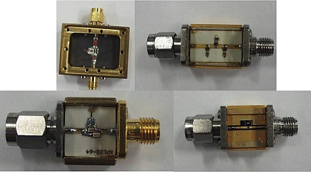
Examples of passive equalizers developed for compensating for the loss in long coaxial cables (top left: equalizer for a 3.6Gb/s application (PCT3600), top right: equalizer for a 3Gb/s application (XP3G), bottom left: equalizer for a 6.4Gb/s application (XP13G-64), bottom right: equalizer for a 10GB/s application (XP13G-8).
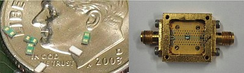
Selecting the Appropriate Equalizer by Simulation
This section presents a methodology for selecting a test fixture equalizer by using a defined process. Figure 16 presents the design flow for determining which equalizer to use on a specific signal path of a test fixture.
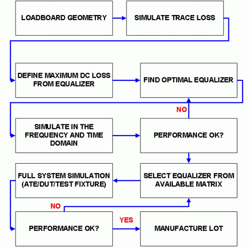
The test engineer needs to provide the signal trace geometry and material to be used on the construction of the test fixture. With this data it is possible to construct a model of the signal trace loss. In addition, the test engineer needs to decide the maximum loss allowed by the I/O cell in order to determine the range of passive equalization that will work for a given test application/system.
The loss of the equalizer determines to what extent the frequency response of the trace can be flattened. The drawback is that this loss needs to be compensated by the ATE resources. One needs to make sure that the ATE has enough margins to be able to test the application with the chosen loss for the equalizer.
After the maximum loss is chosen, an optimal RC equalizer can be found by simulation. This step can be very complex since the definition of optimal equalizer might depend on the application. Figure 17 shows one possible approach that consists in simulating different RC configurations to find the one with the highest bandwidth. Note that it is very important to keep the ripple of the frequency response below a certain minimum value.
With the optimal equalizer found, it is possible to perform a time and frequency domain simulation of the test fixture performance with the optimal equalizer. This allows the test engineer to view the performance improvement that can be obtained with a custom design equalizer.
However, because making a custom equalizer for each application is more expensive and requires longer lead times, a better approach is to select the equalizer from a matrix of available equalizers. This would significantly reduce the cost and lead time.
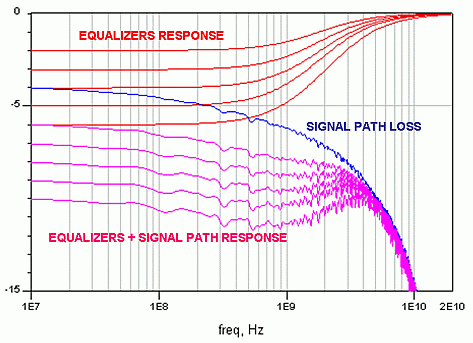
This means that after determining the performance of the optimal equalizer, an equalizer from the available matrix must be chosen. Figure 18 shows this procedure where the optimal equalizer was found and one equalizer from the matrix must now be chosen.
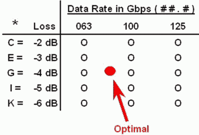
After an equalizer is chosen, a more detailed simulation including models of the ATE pin electronics (if available) and the DUT driver/receiver needs to be completed.
If the simulated performance is not acceptable, additional compromises might be needed for example, allow additional loss or even change the test fixture trace geometry) so that the final performance meets the test engineer needs.
Another important point is the distribution of the DC loss on the manufactured equalizers. As previously mentioned, this DC loss can be calibrated out of the measurements. In order to do that it is important the DC loss value is known and has a tight distribution. If the DC loss distribution is very large then it would be necessary to calibrate each equalizer individually through a focus calibration procedure. Figure 19 shows an example of the expected distribution for a real implementation of the 0603 equalizer.
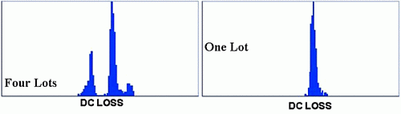
Figure 19 shows it is difficult to keep a tight distribution across multiple lots. However, this problem can be reduced by an additional laser trimming process. The best solution for a given test fixture is that all the equalizers should be from the same production lot.
Experimental Results
This section presents some results obtained by applying the methodology outlined in the "selecting the appropriate equalizer" section to a real application.
Example 1
This sub-section presents some results obtained by applying the methodology outlined in the "selecting the appropriate equalizer" section to a real application. Figure 20 presents a picture of a test fixture developed to teach the basics of signal integrity and equalization when using the Verigy 12.8Gb/s Pin Scale HX ATE pin electronics card.
In this board there exist several different test structures. They are intended to provide examples of the signal integrity challenges inherent to the design of high-speed digital test fixtures. One of the examples is the challenge of compensating for 45 cm of a 21 mil microstrip signal trace in ROGERS4350. The surface plating (NiAu with solder mask on top) is also not optimal, which increases the signal trace loss [7].
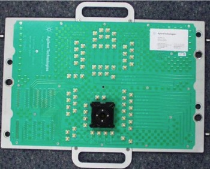
The Verigy V93000 Pin Scale HX pin electronics card used in these measurements already includes an integrated passive equalizer [7]. This equalizer is designed to compensate for approximately 10 inches of a 19 mil stripline in ROGERS4350. Figure 21 left shows a picture of the pin electronics card showing the integrated equalizer on the driver and receiver blocks of the ATE card. The integrated equalizer is clearly not enough for the 45 cm microstrip example and additional equalization is needed in the form of a passive equalizer in the test fixture.
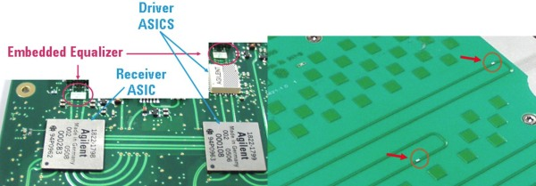
In this application, the DUT is an OC192 10Gb/s transceiver. Following the procedure described in the previous section, an equalizer was selected to compensate for the signal trace loss. Note that in this selection, one needs to take into account the equalizer integrated on the ATE card. Figure 21 right shows the two equalizers for the 45 cm (17.7 inches) microstrip differential pair in the test fixture. An identical microstrip trace with no equalizer also exists on the test fixture for comparison.
The selection of the equalizer was done primarily by evaluating the frequency and time domain response simulations. An equalizer with 4dB loss was chosen for this specific application. The frequency domain simulation results are presented in Figure 22.
The simulated results show an improvement of more than 5GHz on the signal path bandwidth with the integrated equalizer (Figure 22) and the 4dB test fixture passive equalizer in regards to the signal path without equalization. Figure 23 show the simulation results in the time domain.
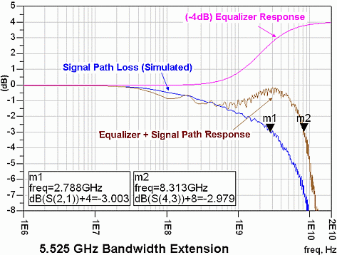
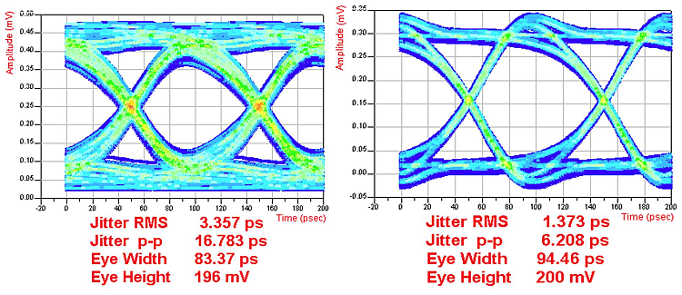
The time domain simulation results show a clear improvement on the data eye performance. The overshoot observed on the data eye is due to the fast rise time of the simulated source and also to the fact that the insertion loss curve is not completely flat. Experience has shown us that a slight overshoot in simulation is preferred, as the real driver is typically slower and the signal path's loss is slightly higher, thus eliminating the overshoot in the real application. Figure 24 presents a block diagram of the measurement set-up showing the different measurement points included in this section.
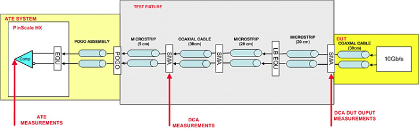
Figure 25 shows the DUT output data eye at 10GB/s. This is clearly a high-performance driver, delivering a very low jitter data eye with a very fast rise time. Note that this data eye is taken at the output of the DUT with a small (30cm) coaxial cable as shown in Figure 24.
Figure 26 shows the output data eye measured further along the signal path after the 45cm of a microstrip line, with and without the test fixture equalizer. The data eye on Figure 26 left shows a significant amount of ISI added by the signal trace loss, while the date eye on Figure 26 right shows how the equalizer, by compensating for the frequency dependent loss of the signal trace, is able to reduce the ISI significantly. Although there is an amplitude decrease due to the constant loss of the equalizer, it can easily be calibrated out in the measurements.
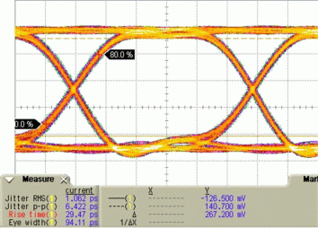
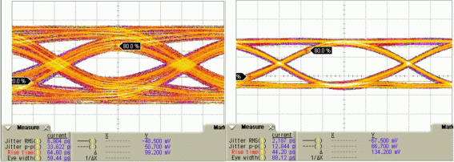
Figure 27 presents the eye diagrams measured by the ATE pin electronics receiver with and without the equalizer on the test fixture. On these measurements, a PRBS7 data pattern was used and 1E9 bits were acquired at each (voltage, timing) measurement point.
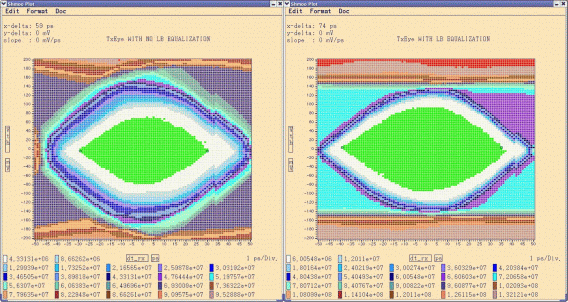
The results show that the equalizer on the test fixture is able to improve the measured data eye width by 15 ps.
Example 2
In this example we present the compensation of a different DUT loadboard structure. Fig. 17 presents a picture of an experimental test fixture containing several structures developed to investigate DUT board design topics. One of the structures is a 50.8cm (20 inch) 9 mil stripline in ROGERS4350. As on the previous example, the expected loss from this signal trace is larger than the loss for which the Verigy V93000 Pin Scale HX card was designed.
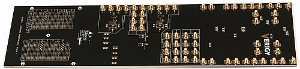
Figure 29 shows the measured insertion loss for the signal trace and also the insertion loss when including the Pin Scale HX integrated equalizer and also when adding an extra passive equalizer on the Loadboard. Of course the extra equalizer was properly chosen. Note that the equalization loss was calibrated out of the measurements.
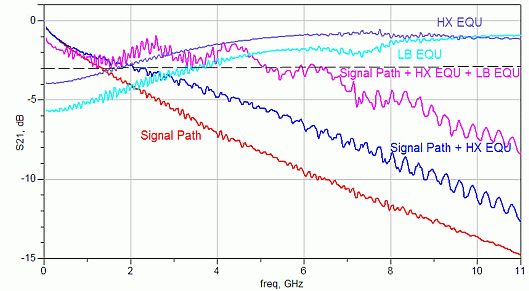
Figure 30 shows the results on the time domain using a PRBS31 data pattern at 10Gb/s with a bench set-up that does include the entire Verigy V93000 signal path (driver + Pogo Assembly + DUT Loadboard). The time and level scales were kept the same on all measurements.
From the results it is easy to see that without any kind of equalization the signal at the end of the signal path is very degraded due to the signal path loss. If one included the standard equalizer on the Pin Scale HX card it is possible to observe a significant improvement on the data eye but it is still outside specification (rise-time <40ps) due to the HX equalizer not having been designed for such a lossy trace. Finally with an extra passive equalizer in the DUT board the data eye performance gets a further significant improvement with the rise-time now below 40ps. One can also note the loss effect of the equalizer by the reduction of the data eye amplitude, although interestingly, by removing the level jitter through equalization the eye height, in fact increases. In any case, this loss factor can be easily calibrated out in the measurements.
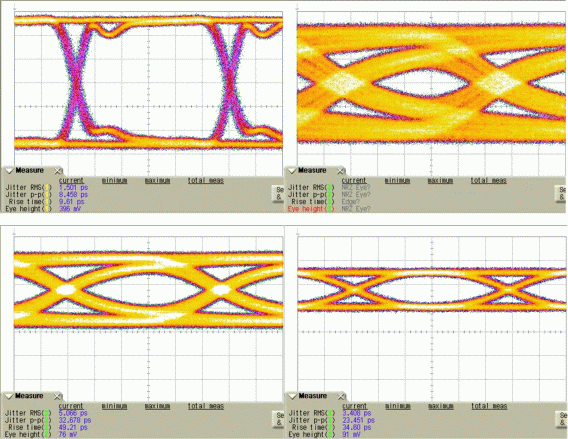
Data eye at the output of the test driver (top left), measured data eye at the end of the signal path without any type of equalization (top right), with the Pin Scale HX integrated equalizer (bottom left) and with the Pin Scale HX equalizer and an extra passive equalizer on the DUT loadboard.
We can also look at the data eye after the driver including the Pin Scale HX equalizer and the DUT board passive equalizer. Figure 31 shows the data eye before the lossy signal path.
It shows the overshooting or pre-emphasis effect that it is expected from the high-pass behaviour of an equalization filter.
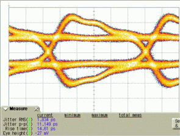
Example 3
In this example, we will show how equalization can have a significant effect on measurements, in this case measuring the jitter histogram. Figure 32 shows a jitter histogram measurement of the DUT at 10Gb/s with a PRBS7 data pattern using the Verigy V93000 Pin Scale HX receiver. The figure presents three different measurement set-ups: a 45cm microstrip trace without test fixture equalization, the same trace with equalization on the test fixture, and a 25cm (10'') stripline trace (19mil on ROGERS4350) with no test fixture equalization. Note that the Pin Scale HX pin electronics receiver used on the measurements includes the integrated equalizer shown in Figure 21 left.
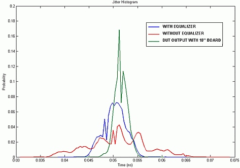
From the figure above it is possible to see that by adding the equalizer on the test fixture, we are able to obtain a better jitter histogram measurement that is closer to the real output from the DUT.
Another interesting result is to look into the influence of the data rate on the measurements. Using a bench instrument as stimulus source we increased the data rate from 5 Gb/s to 10Gb/s. The peak-peak jitter from the stimulus source is constant across the different data rates. The signal was measured at the end of the 45cm signal trace with and without the passive equalizer. The results are presented in Table 1. As the data rate increases, the ISI effects on the jitter envelop increase as well. However, since the equalizer flattens and extends the BW of the signal trace's frequency response, the ISI effects are drastically reduced.
DATA RATE |
No EQU |
With EQU |
|---|---|---|
5Gbps |
17 |
16.7 |
6.4Gbps |
19.1 |
15.6 |
8Gbps |
21.9 |
16.5 |
10Gbps |
25.6 |
15.9 |
The results show that after 5 Gb/s the measured peak-peak jitter on the signal trace without equalization increases due to the bandwidth limitations of the test fixture that adds ISI jitter to the signal. For the signal trace with equalization it is possible to observe that the measured peak-peak jitter value stays constant due to the increased bandwidth of the test fixture through equalization. This is a very important observation, especially when testing devices with variable data rates.
Conclusions
This paper has demonstrated that it is possible to address the challenge of the test fixture trace loss for high-speed and high pin count digital interfaces in current and future ICs, by using passive equalization integrated on the test fixture. A design methodology was presented to choose the correct equalizer, and results with a real application were presented, showing the significant improvement that can be obtained by the use of passive equalization integrated on the test fixture.
As more and more silicon suppliers integrate higher numbers of I/O cells running at multi-gigabit speeds, the layout of the test interfaces will require smaller trace widths and longer traces. This means that unacceptable level of frequency dependent loss will be added to the signal to be measured. Passive equalization is not a perfect solution to this problem, as it induces its own amplitude attenuation, but it can increase significantly the bandwidth of the test interface, reducing the ISI added to the signal to be measured. Careful selection of the equalizers is crucial, as it is possible for an equalizer to cause an unacceptable reduction in the signal amplitude to be measured. However, if properly selected the test engineer can address the test interface loss issue as shown in the results with a real application presented in this article.
Acknowledgements
We would like to thank Bernd Laquai from Verigy for initially bringing together TFT and Verigy. We would also like to thank Roger Nettles from Verigy and Jonathan Kenton from Intel.
References
- M. P. Li, Design and Test for Multiple Gbps Communication Devices and Systems, IEC, 2005
- U. Schoettmer, C. Wagner and T. Bleakley, "Device Interfacing: The Weakest Link in the Chain to Break into the Giga Bit Domain?," IEEE International Test Conference, 2003.
- M. Shimanouchi, "New Paradigm for Signal Paths in ATE Pin Electronics are Needed for Serialcom Device Testing," IEEE International Test Conference, 2002.
- Jose Moreira, Gert Hänsel and Frank Koban "Addressing the Challenge of Implementing an At-Speed Production Test Solution for 10Gb/s Wafer Probing" IEC DesignCon West, 2005.
- Howard Johnson and Martin Graham, High-Speed Signal Propagation. Prentice Hall 2003.
- Stephen C. Thierauf, High-Speed Circuit Board Signal Integrity. Artech House 2004.
- J. Moreira et al "PCB Loadboard Design Challenges for Multi-Gigabit Devices in Automated Test Applications" IEC DesignCon West, 2006.
- K.C. Gupta, Microstrip Lines and Slotlines. Artech House 1996.
- Brian C. Wadell, Transmission Line Design Handbook. Artech House 1991.
- Daniel G. Swanson and Wolfgang J.R., Microwave Circuit Modeling Using Electromagnetic Field Simulation. Artech House 2003.
- Hendrik W. Bode "Attenuation Equalizer" US Patent 2,096,027,027 1936.
- Wolfram Humann "Compensation of Transmission Line Loss for Gbit/s Test on ATEs" IEEE International Test Conference, 2002.
- Jose Moreira et al. "Influence of Dielectric Material on ATE Test Fixtures for High-Speed Digital Applications" Proceedings of the sixth international Kharkov symposium on physics of engineering of microwave, milimeter and submilimeter waves 2007.
- Heidi Barnes et al. "Development of a Pogo Pin Assembly and Via Design for Multi-Gigabit Interfaces on Automated Test Equipment" Proceedings of the 2006 Asia-Pacific microwave conference.